La casa de cambio P2P del ecosistema: cómo está construida, cómo funciona una compraventa con custodia, cómo se verifica la identidad contra Genesis ID, qué protege el dinero de la gente, y qué falta para ir a producción.
OrdenExchange es un mercado entre personas (P2P) para comprar y vender ORIGEN —y también AUKA y AGKA— a cambio de la moneda de cada país de Latinoamérica, pagando por transferencia bancaria o por las billeteras que cada país usa de verdad: PIX, Nequi, Yape, SINPE Móvil, Tigo Money, Pago Móvil, Mercado Pago, SPEI, Zelle… Funciona como Binance P2P: alguien publica un anuncio, otra persona lo toma, la plataforma custodia el activo mientras el dinero viaja por fuera, y lo libera cuando el vendedor confirma que cobró. Si algo falla, un operador resuelve la apelación leyendo el chat y los comprobantes.
Para operar hace falta una identidad verificada en Genesis ID, la identidad del ecosistema Orden Global. OrdenExchange no verifica a nadie por su cuenta: acompaña a la persona en el trámite (datos, documento, rostro) y una persona del equipo de cumplimiento aprueba en Genesis ID. Cada compraventa completada se reporta al monitoreo de lavado de activos de ambas partes.
Lo que falta no es código de OrdenExchange sino infraestructura y decisiones: una base MongoDB (el archivo JSON sirve para desarrollo, no para custodiar saldos), la clave real de la app en Genesis ID, el proveedor de correo (Brevo) para los códigos de confirmación, la cuenta tesorería en la cadena 5550 y quién la firma, un proveedor de biometría en Genesis ID (sin él, cada rostro lo coteja una persona), y el precio del metal alimentado desde una fuente automática. Se detallan en la sección 19.
OrdenExchange es una pieza más de Orden Global y se apoya en las que ya existen en lugar de repetirlas. No custodia dinero de curso legal: los pagos entre personas van por fuera, por los bancos y billeteras de cada país. Sí custodia el activo digital mientras dura una orden.
| Pieza | Qué le da a OrdenExchange | Cómo |
|---|---|---|
| Genesis ID | Quién es cada persona (GID), si puede operar, tamizado de sanciones, monitoreo AML, sesión única entre apps. | App ordenexchange registrada en genesis-id/src/auth/aplicaciones.ts con alcances: identidad.crear/leer/documento, gid.verificar/perfil, vinculo.crear, movimiento.enviar, tamiz.direccion, telemetria.enviar, directorio.enviar. |
| Cadena 5550 | Los activos. Depósitos comprobados por hash de transacción; retiros que un operador firma desde la tesorería. | JSON-RPC de solo lectura (eth_getTransactionByHash, recibos, evento Transfer para AUKA/AGKA). Sin llaves privadas. |
| Veta Wallet | La billetera desde la que la persona deposita y a la que retira (su dirección 0x en el perfil). | La persona pega el hash del depósito; el servidor lo verifica. |
| ULTRON | El cerebro del ecosistema conoce OrdenExchange (base de conocimiento) para responder sobre él. | ULTRON-APP/src/05-cerebro-og/conocimiento.ts. |
| Render / Vercel | Despliegue. | Servicio ordenexchange en render.yaml (raíz del monorepo) y vercel.json propio. |
Un solo servicio Node (Express + TypeScript, ESM, ejecutado con tsx) sirve la API, la app web y el panel. La lógica vive en el motor; las rutas son finas: validan la sesión y llaman al motor. El estado entero está en un documento (archivo JSON en desarrollo, documento de MongoDB en producción), con dos colecciones aparte para lo que pesa: las imágenes del chat y, en Mongo, nada más. Es el mismo patrón de almacén que Genesis ID.
| Carpeta / archivo | Qué hay |
|---|---|
src/index.ts | Arranque: CSP y HSTS, CORS, trust proxy condicional, parsers, rutas, app y panel estáticos, /healthz, tareas periódicas (órdenes vencidas cada 30 s, cola AML cada 30 s). |
src/types.ts | El modelo de datos entero, comentado (sección 4). |
src/motor/ | billetera (custodia), ordenes, anuncios, usuarios, agentes, metodosPago, precios, genesis (cliente), aml (cola de reportes), cadena (JSON-RPC), correo (Brevo), imagenes, operadores, bitacora, demo. |
src/routes/ | auth, genesis, mercado, anuncios, ordenes, billetera, metodosPago, agentes, panel. |
src/lib/ | decimal (BigInt a 18 decimales), cripto (bcrypt, JWT, HMAC), sesion (guardias), limite (peticiones por minuto), errores (Falla con código), entorno (una sola definición de «producción»), uid. |
src/data/ | latam.ts (23 países: moneda, bancos, métodos de pago con sus campos canónicos), activos.ts, monedas.ts, fxSemilla.ts (tasas iniciales USD → moneda local). |
public/ | La app (index.html, app.js, app.css, i18n.js) y el panel (admin.html, admin.js, admin.css). Vanilla, sin framework ni compilación; enrutado por #/ruta. |
src/pruebas/ | decimal.test.ts, flujo.test.ts (demostración), genesis.integracion.ts (contra Genesis ID real). |
README.md · API.md · DISEÑO.md | Cómo se arranca, el contrato HTTP completo, la guía del frontend. |
billetera.mover(), que aplica el movimiento entero o lo rechaza entero, y deja un registro con su referencia. No hay otra vía.lib/decimal.ts) y los recortes van siempre hacia abajo. No hay coma flotante en dinero.lib/entorno.ts): NODE_ENV=production, Render, Vercel, Mongo configurado o tesorería configurada. Con cualquiera de esas señales, el modo demostración no se enciende aunque se pida, el secreto de sesiones es obligatorio y las cuentas de demostración se congelan./api/genesis/* y el servidor reenvía con X-API-Key, igual que el puente de Veta Wallet y MyTokenPay.localStorage solo para la sesión y el país. Sondeo cada pocos segundos dentro de una orden; no hay WebSockets.i18n.js).Todo está en src/types.ts. Las cantidades son cadenas decimales; las fechas, ISO 8601. Los identificadores llevan prefijo (usr_, ord_, anu_…). Lo que sale por la API es una vista: nunca el correo ni el nombre legal entero de otra persona, nunca los datos bancarios fuera de una orden abierta.
| Entidad | Campos clave | Notas |
|---|---|---|
| Usuario | email, emailVerificado, hashContrasena, apodo, pais, idioma, telefono, direccionCadena, gid, gidEstado, nombreLegal, agente, congelado, reputacion, sesionesDesde | gidEstado: sin-verificar · en-revision · verificada · rechazada · suspendida. sesionesDesde revoca todos los JWT anteriores a ese instante. |
| Saldo | usuarioId, activo, disponible, congelado | Dos bolsillos por activo. Ninguno baja de cero. |
| Movimiento | tipo, activo, disponible (±), congelado (±), referencia, descripción, fecha | Tipos: deposito, retiro-solicitado/enviado/rechazado, orden-congelar/descongelar/liberar/recibir, comision, garantia-agente, garantia-devuelta, ajuste, faucet. La suma de movimientos ES el saldo. |
| Anuncio | lado, activo, moneda, pais, tipoPrecio (fijo/flotante), precio o margen, cantidadTotal/Disponible, limiteMin/Max, metodos, ventanaPagoMin (15–60), terminos, respuestaAutomatica, requisitos, estado | Estados: activo · pausado · agotado · cerrado. Requisitos para la contraparte: GID verificado, órdenes mínimas, tasa de finalización, días registrado, solo agentes. |
| Orden | numero, anuncioId, compradorId, vendedorId, activo, moneda, precio, cantidadActivo, montoFiat, comision, metodoPago (copia), estado, venceEn, referenciaPago, apelacion, apelacionesPrevias, calificaciones, mensajes, imagenesChat | Estados: pendiente-pago · pagado · apelacion · completada · cancelada. Guarda una copia del método de pago tal como estaba al abrirse. |
| Mensaje | de (comprador/vendedor/sistema/operador), texto, imagen (id), fecha, vistoPor | Máximo 300 mensajes y 6 imágenes por orden; el chat cierra 24 h después de terminar. Las imágenes viven aparte y se sirven con URL firmada. |
| MetodoPago | pais, tipo, banco, titular, campos (canónicos por método), activo | Validado contra el catálogo del país. No se desactiva si está en un anuncio abierto. |
| SolicitudAgente | usuarioId, estado, garantia, decididaPor, motivo | La garantía se congela al solicitar y se devuelve al renunciar o rechazar. |
| Deposito · Retiro | activo, cantidad, direccion, txHash, estado, decididoPor | Retiro: pendiente · enviado · rechazado · cancelado. El hash de retiro es único. |
| Operador · SesionOperador | email, rol (admin/soporte/auditor), hashContrasena; sesión guardada por hash del token | Bloqueo por correo+IP tras intentos fallidos. |
| Precios · Configuracion | oroUsdOnza, plataUsdOnza, fx{}, fuente; comisionPct, garantiaAgente, maxOrdenesAbiertas, minOrdenUsd, maxOrdenUsdSinAgente, confirmacionesDeposito, tesoreria | Editables desde el panel; al arrancar salen del entorno y de la semilla. |
| EntradaBitacora | actor, accion, objeto, detalle, hashAnterior, hash | Cadena de hashes: el panel comprueba que está íntegra. |
| ReporteAml | gid, movimiento, intentos, ultimoIntento, ultimoError | Cola persistente hacia el monitoreo de Genesis ID (sección 11). |
UsuarioPublico (lo que ve cualquiera en el mercado): apodo, país, insignias (verificado, agente), reputación, nombre abreviado («Juan P.», derivado del nombre legal), en línea. UsuarioPropio (solo el dueño): además correo, GID, estado de verificación, nombre legal, dirección de la cadena, puedeOperar y motivoNoOpera. La orden se devuelve con acciones (qué botones tienen sentido para quien la mira) para que el frontend no tenga que reconstruir las reglas.
El modelo es el de Binance P2P: la plataforma no compra ni vende, pone en contacto a dos personas, custodia el activo mientras el dinero viaja por fuera y arbitra si hace falta. Quien vende ORIGEN lo deja congelado en cuanto nace la orden; quien compra paga en su moneda por el método pactado y lo dice; el vendedor comprueba que cobró y libera.
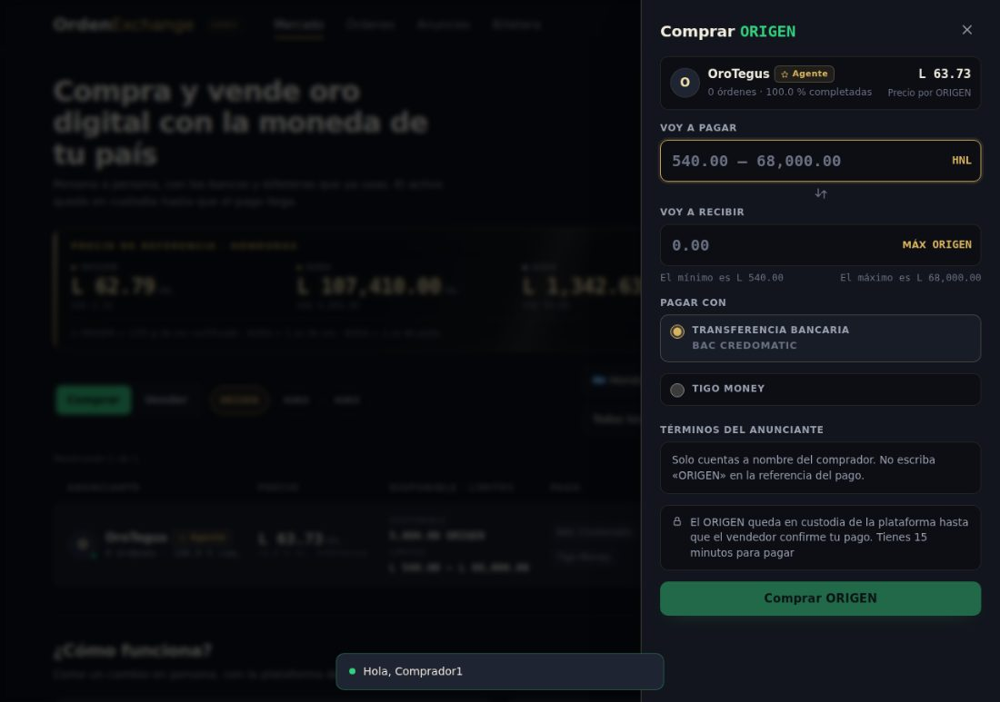
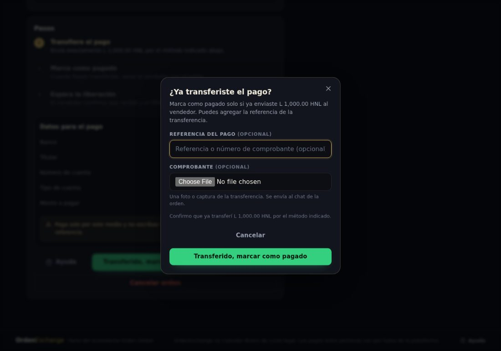
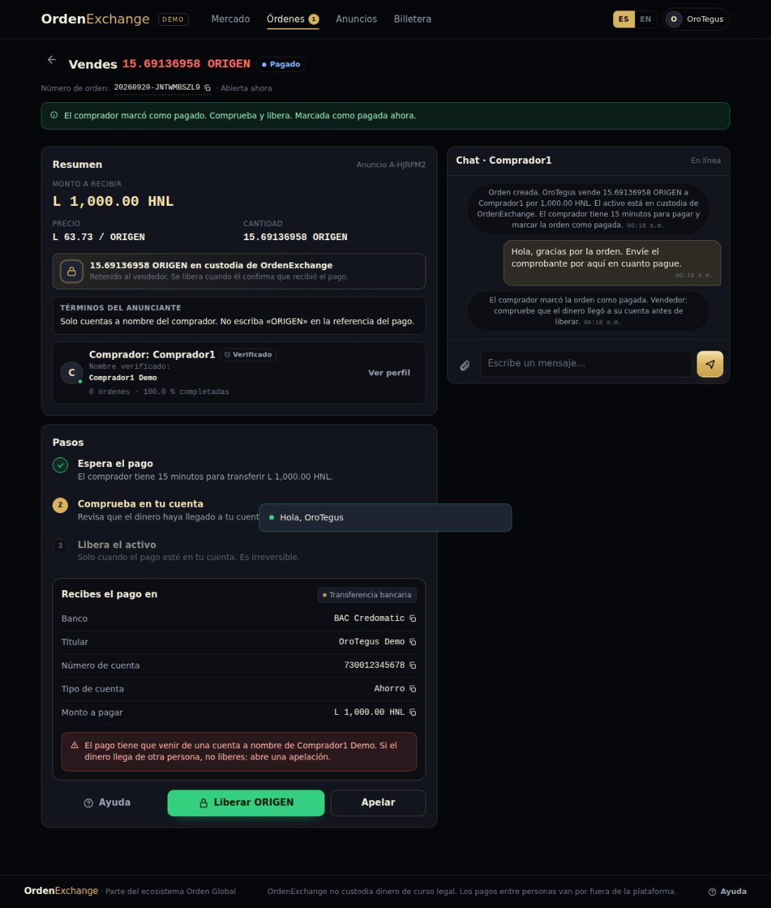
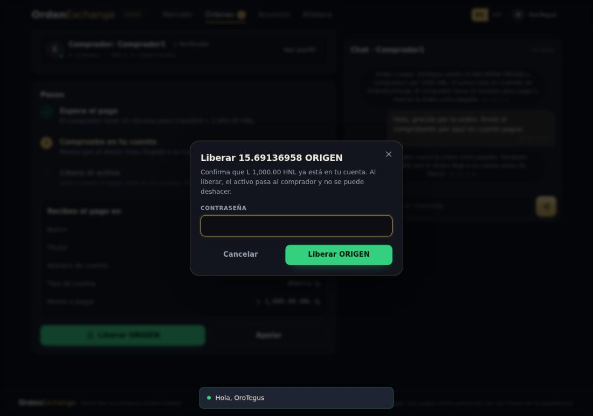
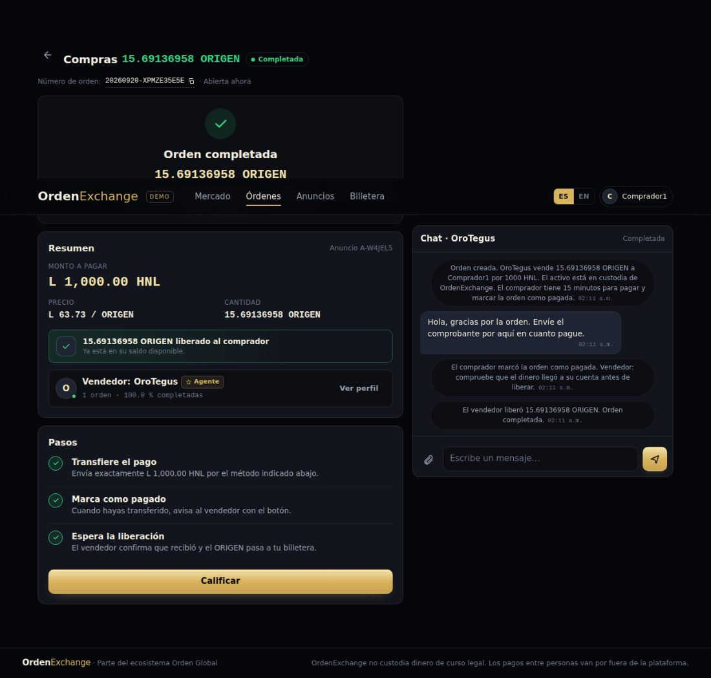
Cada persona tiene por activo dos bolsillos: disponible y congelado (custodia). Todo lo que pasa con el dinero se reduce a mover entre esos bolsillos, y hay tres reglas que ninguna operación puede romper:
billetera.mover(usuarioId, activo, {disponible, congelado}, tipo, referencia, descripcion) es la única función que toca un saldo. Calcula el resultado con BigInt, rechaza si algún bolsillo quedaría negativo, escribe el saldo y el movimiento en la misma operación y guarda.congelar, descongelar, liberarCustodia (vendedor → comprador, con la comisión a la tesorería), acreditarDeposito, solicitarRetiro, decidirRetiro, ajustar (solo admin, con motivo, queda en bitácora).lib/decimal.ts): cadenas decimales a BigInt con 18 decimales, comparación, suma, resta, multiplicación y división con recorte hacia abajo. El precio por activo, el monto en moneda local y la cantidad se derivan siempre igual, así que comprador y vendedor ven los mismos números.flujo.test.ts termina recorriendo todos los saldos y comprobando que cada uno es exactamente la suma de sus movimientos.Los tres activos están anclados al metal, así que su precio de referencia no sale de un mercado cripto sino del oro y la plata: 1 ORIGEN = 1/55 de gramo de oro, 1 AUKA = 1 onza troy de oro, 1 AGKA = 1 onza troy de plata. Con el precio del metal en dólares y la tasa dólar → moneda local sale la referencia en cada moneda.
ORIGEN en USD = oro_usd_onza × (1/55) / 31,1034768 (gramos por onza troy) ORIGEN en HNL = ORIGEN en USD × fx[HNL] anuncio flotante al 103 % → precio = referencia × 1,03 anuncio fijo → se acepta si está dentro de 10× la referencia
ORDENEX_ORO_USD_ONZA, ORDENEX_PLATA_USD_ONZA) y de la semilla fxSemilla.ts (tasas del 19 de septiembre de 2026; el bolívar con la tasa oficial del BCV). Cambiar el precio mueve todos los anuncios flotantes del mercado, por eso solo lo puede hacer el rol admin.fuente: 'auto'. El campo ya existe; hoy es manual.src/data/latam.ts describe 23 países con su moneda (código, símbolo, decimales) y los 103 métodos de pago que la gente usa de verdad, cada uno con sus campos canónicos (CLABE, llave PIX, número de Nequi, alias de SINPE, CBU o CVU…) para que el vendedor los rellene bien y el comprador sepa dónde pagar. Se valida contra este catálogo al crear un método de pago o un anuncio.
Los 457 bancos y entidades viven en un dato aparte, porque son lo que más cambia y lo que más se consulta: src/data/fuentes/bancos.json es la fuente, npm run generar:bancos produce src/data/bancos.ts, y de ahí salen los nombres que ve la persona al registrar una cuenta. De cada entidad se guarda:
| Campo | Para qué |
|---|---|
nombre · nombreCorto | Como lo conoce la gente del país, sin «S.A.» |
tipo | comercial · estatal · cooperativa · fintech · microfinanciera · caja. Distinguirlo importa: en Guatemala la red MICOOPE o en El Salvador FEDECRÉDITO mueven tanto P2P como un banco. |
tiposCuenta | Los que ofrece a personas, con su nombre local: «Monetaria» en Guatemala, «Caja de ahorro» en Argentina, «Cuenta Vista» en Chile, «Conta Poupança» en Brasil, «Cheques» en Honduras. El formulario los ofrece en un desplegable en cuanto se elige el banco. |
formatoCuenta | Qué tiene que teclear el vendedor: «CLABE de 18 dígitos», «CBU de 22 dígitos», «agencia de 4 dígitos + cuenta», «cuenta de 14 dígitos; CCI de 20». Se enseña como ayuda bajo el campo. |
codigo | El código oficial donde existe: SPEI en México (012 BBVA, 072 Banorte…), el código de banco de Venezuela para el Pago Móvil (0102, 0134…), el código ACH en Colombia. |
importancia | principal · secundario · nicho. El formulario agrupa «Principales» y «Otros bancos y entidades» para que no haya que recorrer cuarenta nombres. |
nota | Lo que hay que saber: absorciones recientes (Scotiabank por Davivienda en Costa Rica, Panamá y Colombia; Santander por FirstBank y Scotiabank por Oriental en Puerto Rico; Scotiabank por Belize Bank), entidades intervenidas, o que una cuenta se identifica por celular. |
La app los pide por GET /api/mercado/bancos/:pais, una sola vez por país. Los países chicos llevan todas las entidades que existen; los grandes, los principales y los secundarios: Argentina 46, Bolivia 38, Brasil 36, México 27, Perú 23 (con las cajas municipales), Venezuela 22 con su código de banco, Colombia 30, Ecuador 21 (con las cooperativas JEP, Jardín Azuayo y Policía Nacional), Honduras y Panamá 20.
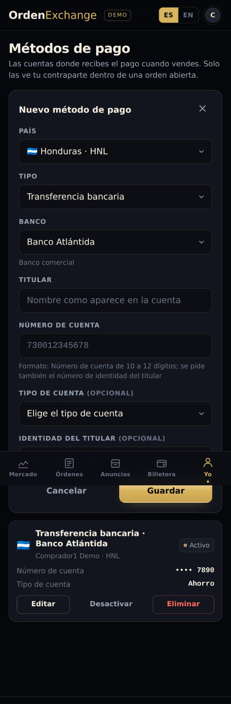
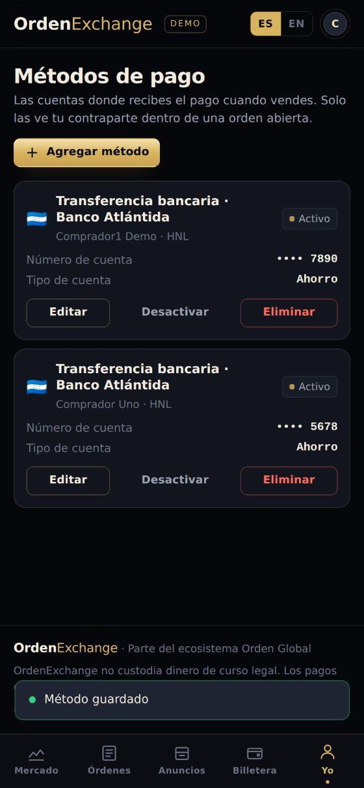
| País | Moneda | Bancos | Métodos de pago |
|---|---|---|---|
| 🇦🇷 Argentina | ARS · Peso argentino | 46 | Transferencia bancaria, Mercado Pago, Cuenta DNI, MODO, Ualá, Brubank, Lemon, Naranja X, Personal Pay, Prex, Efectivo en persona |
| 🇧🇿 Belice | BZD · Dólar beliceño | 7 | Transferencia bancaria, DigiWallet, E-Kyash, Efectivo en persona |
| 🇧🇴 Bolivia | BOB · Boliviano | 38 | Transferencia bancaria, Tigo Money, Yape, Bille, Yasta, Efectivo en persona |
| 🇧🇷 Brasil | BRL · Real brasileño | 36 | PIX, Transferencia bancaria (TED), Mercado Pago, PicPay, PagBank, Efectivo en persona |
| 🇨🇱 Chile | CLP · Peso chileno (sin decimales) | 20 | Transferencia bancaria, MACH, Tenpo, Mercado Pago, Efectivo en persona |
| 🇨🇴 Colombia | COP · Peso colombiano | 30 | Nequi, Daviplata, Bre-B (llave), Transferencia bancaria, Movii, Efectivo en persona |
| 🇨🇷 Costa Rica | CRC · Colón costarricense | 19 | SINPE Móvil, Transferencia bancaria, Efectivo en persona |
| 🇪🇨 Ecuador | USD · Dólar estadounidense | 21 | Transferencia bancaria, Deuna, Peigo, Efectivo en persona |
| 🇸🇻 El Salvador | USD · Dólar estadounidense | 15 | Transferencia bancaria (Transfer365), Transfer365 Móvil, Tigo Money, Efectivo en persona |
| 🇬🇹 Guatemala | GTQ · Quetzal | 19 | Transferencia bancaria, Tigo Money, Efectivo en persona |
| 🇬🇾 Guyana | GYD · Dólar guyanés | 8 | Transferencia bancaria, MMG (Mobile Money Guyana), Efectivo en persona |
| 🇭🇹 Haití | HTG · Gourde | 8 | MonCash, NatCash, Transferencia bancaria, Efectivo en persona |
| 🇭🇳 Honduras | HNL · Lempira | 20 | Transferencia bancaria, Tigo Money, Efectivo en persona |
| 🇲🇽 México | MXN · Peso mexicano | 27 | Transferencia bancaria (SPEI), Mercado Pago, Depósito en OXXO, Efectivo en persona |
| 🇳🇮 Nicaragua | NIO · Córdoba | 10 | Transferencia bancaria, Billetera Móvil Banpro, Efectivo en persona |
| 🇵🇦 Panamá | USD · Dólar estadounidense | 20 | Yappy, Transferencia bancaria, Nequi Panamá, Zelle, Efectivo en persona |
| 🇵🇾 Paraguay | PYG · Guaraní (sin decimales) | 18 | Transferencia bancaria, Tigo Money, Personal Pay, Zimple, Billetera ueno, Efectivo en persona |
| 🇵🇪 Perú | PEN · Sol | 23 | Yape, Plin, Transferencia bancaria, Efectivo en persona |
| 🇵🇷 Puerto Rico | USD · Dólar estadounidense | 8 | ATH Móvil, Transferencia bancaria, Zelle, Efectivo en persona |
| 🇩🇴 República Dominicana | DOP · Peso dominicano | 17 | Transferencia bancaria, Zelle, tPago, Efectivo en persona |
| 🇸🇷 Surinam | SRD · Dólar surinamés | 10 | Transferencia bancaria, Uni5Pay+, Efectivo en persona |
| 🇺🇾 Uruguay | UYU · Peso uruguayo | 15 | Transferencia bancaria, Prex, Mi Dinero, Efectivo en persona |
| 🇻🇪 Venezuela | VES · Bolívar | 22 | Pago Móvil, Transferencia bancaria, Zelle, Efectivo en persona |
Entre las billeteras están Cuenta DNI, MODO, Mercado Pago, Ualá, Naranja X, Brubank, Lemon, Personal Pay y Prex en Argentina; Pix, Mercado Pago, PicPay y PagBank en Brasil; Nequi, Daviplata, Bre-B y Movii en Colombia; Yape y Plin en Perú; SINPE Móvil en Costa Rica; Pago Móvil en Venezuela; Yappy y Nequi en Panamá; Tigo Money en cinco países; MonCash y NatCash en Haití; ATH Móvil en Puerto Rico; tPago en República Dominicana; Peigo en Ecuador; y la billetera ueno en Paraguay. Zelle se liquida en dólares aunque el país tenga otra moneda; el efectivo en persona puede pactarse en dólares. Cada método declara si el pago es instantáneo y qué campos lleva; los datos del vendedor se enseñan solo dentro de una orden abierta y con los números parcialmente enmascarados fuera de ella.
OrdenExchange no decide quién es quién. La identidad del ecosistema es Genesis ID, y OrdenExchange entra por la misma puerta que Veta Wallet y MyTokenPay: como una app registrada con su clave y sus alcances. Lo que hace OrdenExchange es acompañar el trámite desde su propia interfaz y reflejar en la cuenta lo que Genesis ID diga. La aprobación es un acto humano en el panel de Genesis ID; la clave de la app no sirve para aprobar a nadie, y hay una prueba que lo comprueba.
La identidad se busca en Genesis ID por el correo de la cuenta. Si el correo no estuviera confirmado, cualquiera que se registrara con el correo de otra persona se quedaría con su identidad y su GID. Por eso el registro manda un código de seis dígitos (Brevo) y todas las rutas del trámite exigen el correo confirmado. Sin proveedor de correo y fuera de producción, el código vuelve en la respuesta para poder probar el flujo entero.
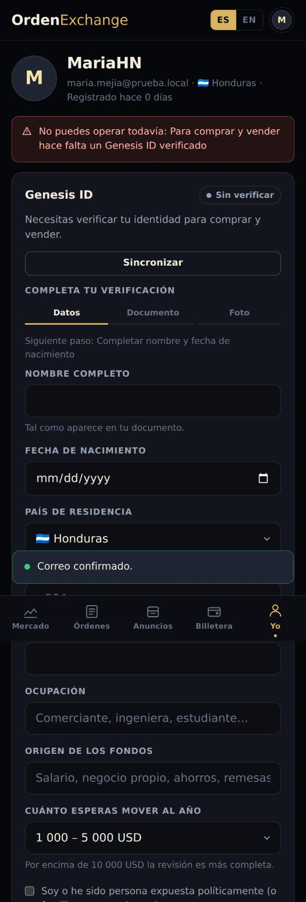
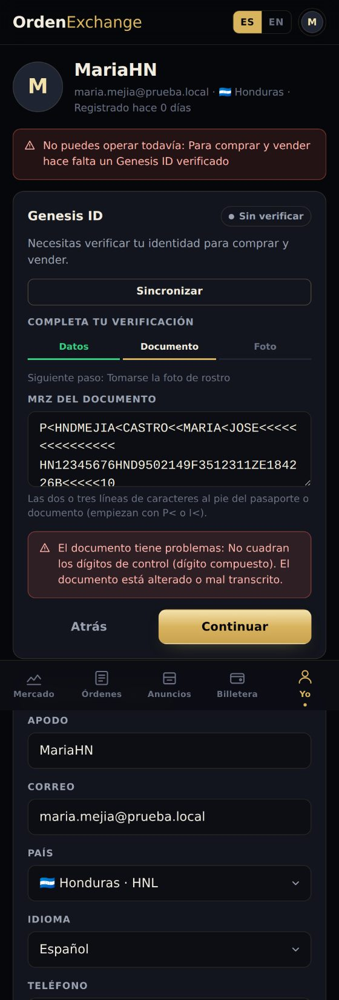
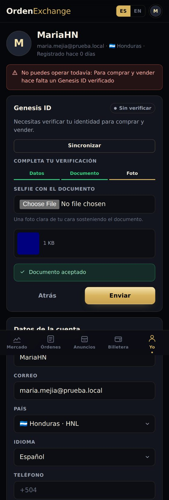
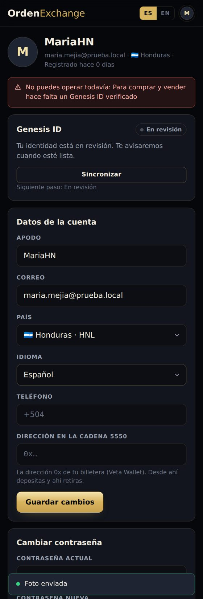
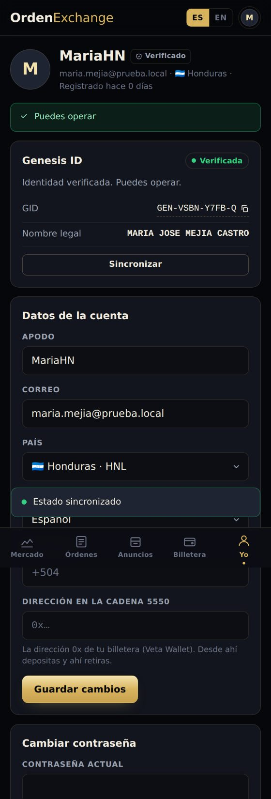
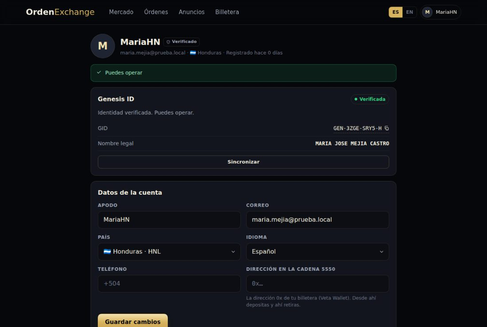
Paso 1 · Datos y perfil de cumplimiento. Nombre tal como está en el documento, fecha de nacimiento, país de residencia (ISO3), teléfono, dirección, ocupación, origen de los fondos, cuánto espera mover al año y si es persona expuesta políticamente. Genesis ID no aprueba a quien declare mover 10 000 USD o más al año (o no declare nada) sin ocupación y origen de fondos: es lo único contra lo que se puede contrastar un movimiento cuando salta una alerta. Al recibir el nombre, Genesis ID lo tamiza contra las listas de sanciones.
Paso 2 · Documento. La MRZ (las dos o tres líneas de caracteres al pie del pasaporte o la cédula) se lee en el teléfono; la imagen del documento no viaja ni se guarda. Genesis ID comprueba los dígitos de control (ICAO 9303), la vigencia y que coincida con lo declarado. Si no es aceptable, la app lo dice y la persona sigue en el paso 2.
Paso 3 · Rostro. Un selfie (comprimido en el teléfono). Con un proveedor de biometría configurado en Genesis ID (Rekognition o un servicio externo) se coteja contra el documento y se hace una prueba de vida por reto; sin proveedor, queda no-configurada y lo coteja un operador. En ambos casos la cuenta pasa a en revisión. Si el cotejo falla (mala luz, gesto a medias), Genesis ID lo marca como rostroPendiente y la app vuelve a enseñar el paso 3 para repetir la foto.
Aprobación. Un operador de cumplimiento, en el panel de Genesis ID, con las listas de sanciones cargadas y sin bloqueos (documento válido, tamizado hecho, rostro cotejado, perfil completo), aprueba con un motivo escrito. Genesis ID emite el GID (GEN-XXXX-XXXX-C, con dígito verificador). Al abrir el perfil o pulsar «Sincronizar», OrdenExchange lo recoge, guarda el nombre legal, ata la cuenta a la identidad (vínculo app = ordenexchange, cuenta = id del usuario) y la persona ya puede operar.
| Estado en Genesis ID | Estado de la cuenta | Qué ve la persona |
|---|---|---|
| iniciada · datos · documento | sin-verificar | El asistente, en el paso que toca (paso lo calcula el servidor: 1, 2 o 3) |
| biometria · en-revision | en-revision | «Tu identidad está en revisión» y el botón Sincronizar; el paso 3 si hay que repetir la foto |
| verificada | verificada | GID, nombre legal, insignia «Verificado», «Puedes operar» |
| rechazada | rechazada | El motivo genérico y el asistente desde el paso 1 |
| suspendida | suspendida | «Escribe a soporte». No puede publicar, tomar anuncios ni retirar |
usuarios.exigirOperar(). Un GID de demostración (sufijo -D) no vale fuera de la demostración.routes/genesis.ts.POST /api/genesis/sso/token emite un token para entrar en otra app del ecosistema; y POST /api/auth/sso acepta el token de otra app: si el GID ya tiene cuenta aquí, entra en ella; si no, completa el registro (correo, apodo, país, contraseña) y queda verificada.reportesAml en el almacén) y se despacha con reintentos crecientes (5 s, 10 s, 20 s… hasta 10 minutos, 12 intentos): un reporte que no llega se reintenta, no se pierde, y /healthz enseña cuántos hay pendientes. A la persona nunca se le dice nada de esto.npm run prueba:genesis levanta el Genesis ID del repositorio en un proceso aparte (clave recién emitida, listas de sanciones de prueba, sin proveedor de biometría) y OrdenExchange en modo real, y recorre las 28 pruebas: registro → correo → estado → datos → MRZ manipulada rechazada → MRZ válida → selfie → en revisión → la clave de la app no aprueba → el operador no aprueba con bloqueos → cotejo manual y aprobación → GID, nombre legal, vínculo, puede operar → sesión única (mismo usuario, token inventado rechazado) → tamizado de una dirección limpia y una sancionada → un segundo usuario verificado, una compraventa completa y sus dos movimientos en el monitoreo → una suspensión que apaga la cuenta.Al probar de verdad apareció un defecto en Genesis ID: su limitador de peticiones tenía un solo cubo por IP para todo /api/v1, y la primera ruta que se tocaba fijaba la capacidad de todas (mandar un rostro, 20 por minuto, dejaba sin fichas al monitoreo AML). Como todas las apps del ecosistema hablan con Genesis ID desde una sola IP de servidor, eso habría estrangulado el monitoreo en producción. Ahora el cubo es por ruta (genesis-id/src/middleware/proteger.ts); las 151 pruebas de Genesis ID siguen pasando.
Un agente de cambio es el equivalente del «comerciante verificado» de Binance P2P: alguien que opera con volumen, responde rápido y ha dejado una garantía en ORIGEN que responde por su conducta. Lleva insignia en el mercado, puede superar el máximo por orden de los usuarios normales y puede publicar anuncios «solo para agentes».
| Requisito | Valor por defecto | Dónde se cambia |
|---|---|---|
| Genesis ID verificado | obligatorio | — |
| Garantía en ORIGEN, congelada mientras sea agente | 500 ORIGEN | Panel → Configuración (garantiaAgente) |
| Órdenes completadas mínimas | 0 | ORDENEX_AGENTE_ORDENES_MIN |
| Máximo por orden sin ser agente | 5 000 USD equivalentes | Configuración (maxOrdenUsdSinAgente) |
garantia-agente). Un operador con permiso agentes.decidir aprueba o rechaza desde el panel; al rechazar, la garantía vuelve.garantia-devuelta) si no tiene órdenes abiertas.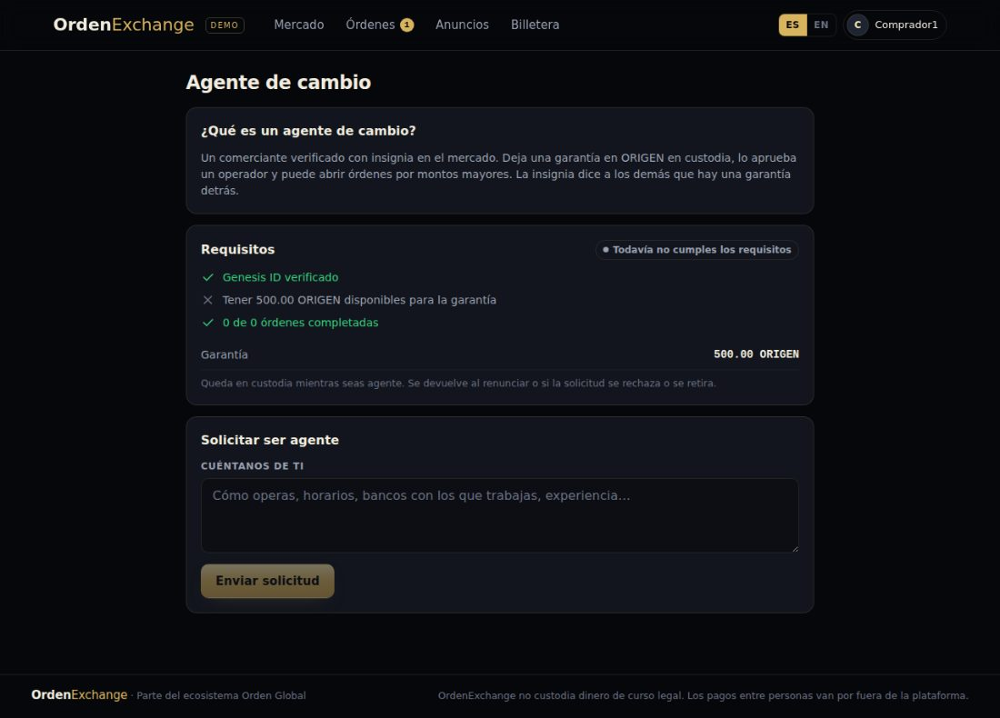
No hay llaves privadas en OrdenExchange. La cuenta de la plataforma en la cadena 5550 es la tesorería (ORDENEX_TESORERIA): a ella deposita la gente y desde ella firma los retiros un operador, fuera del servidor.
Transfer del contrato correcto dice esa cantidad. El hash es único: no se acredita dos veces.deposito con el hash como referencia) y queda en el panel → Depósitos.retiro-solicitado). Mientras esté pendiente, la persona puede cancelarlo y vuelve a disponible.retiros.decidir firma la transferencia desde la tesorería, fuera del servidor, y anota el hash en el panel: retiro-enviado descuenta de congelado. O lo rechaza con motivo: vuelve a disponible.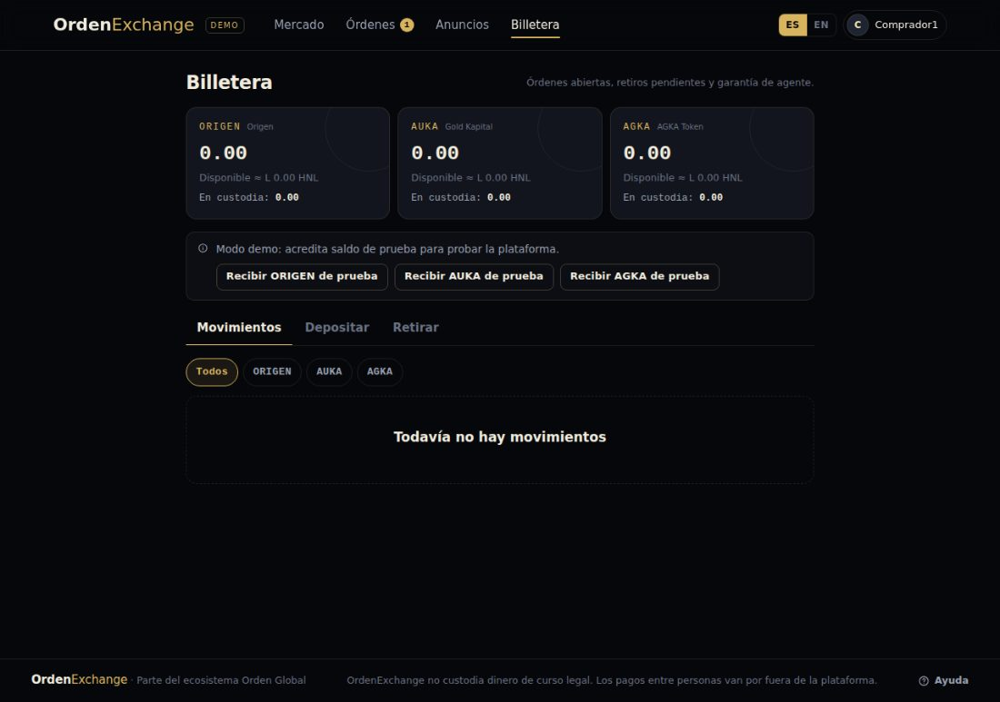
La app es una sola página (public/index.html + app.js) con enrutado por #/ruta, en español e inglés, pensada primero para el teléfono. Negro profundo con oro como acento, verde para comprar y rojo-coral para vender, como en cualquier mercado. Las pantallas y lo que hay en cada una:
| Ruta | Pantalla | Qué hay |
|---|---|---|
#/ · #/mercado | Mercado | Pestañas comprar/vender, activo, país (con su moneda), método de pago, monto, solo agentes; lista de anuncios con precio, disponible, límites, métodos, reputación e insignias; precio de referencia. |
#/anuncio/:id | Tomar un anuncio | Términos, requisitos, monto en moneda local o cantidad, método, resumen y confirmación. |
#/orden/:id | Orden | Estado y temporizador, resumen, datos de pago del vendedor (solo aquí), chat con imágenes, botones según el estado (pagado, liberar, cancelar, apelar, calificar). |
#/ordenes | Mis órdenes | Abiertas e historial, con filtros. |
#/anuncios · #/anuncios/nuevo | Mis anuncios | Lista con pausar/reanudar/cerrar, editor completo con vista previa del precio. |
#/billetera | Billetera | Saldos, depositar (hash), retirar, historial de movimientos, depósitos y retiros. |
#/pagos | Métodos de pago | Alta por catálogo del país con sus campos, activar/desactivar. |
#/agente | Agente de cambio | Requisitos, garantía, solicitud, renuncia. |
#/perfil | Perfil | Confirmación del correo, Genesis ID (estado, asistente, GID, nombre legal), datos de la cuenta, contraseña, reputación, salir. |
#/ayuda | Ayuda | Quince preguntas agrupadas: la garantía, comprar, vender, qué hacer si no liberan o el dinero no llega, apelaciones, ORIGEN, verificación, comisiones, agentes, depósitos, retiros y las dos estafas típicas (pago de un tercero, trato por fuera). Enlazada desde el pie y desde cada orden abierta. |
#/entrar · #/registro | Entrar y registro | Correo y contraseña, registro con país; en demostración, entrar con un clic como cualquiera de los diez usuarios. |
Negro profundo, oro como acento (nunca como fondo grande), verde para comprar y coral para vender; tipografía sans para leer y monoespaciada para todo número, con cifras tabulares para que las columnas cuadren. El movimiento está gastado en una sola idea: el activo entra en custodia y sale de ella. Todo lo demás es el acabado que se espera de un mercado, sin nada que distraiga de los números.
| Dónde | Qué se mueve | Por qué |
|---|---|---|
| La banda de custodia, en cada orden | El candado cae y late mientras el activo está retenido; al liberar, el trazo del visto se dibuja en verde; al cancelar, la flecha de vuelta en gris. | Es el elemento firma: dice en una frase dónde está el activo ahora mismo, que es lo único que de verdad importa en una orden. |
| El temporizador | Una barra dorada que se consume bajo el reloj; a tres minutos se vuelve coral y el reloj late. | El tiempo que queda se ve sin leer los dígitos. |
| La pizarra de precios | Un destello de bóveda recorre el tablero cada ocho segundos; los precios se encienden al llegar; los puntos de cada activo respiran. | El tablero está vivo: los precios son de ahora. |
| Cambiar de pantalla | La vista entra con un deslizamiento corto y las listas (anuncios, órdenes, tarjetas) aparecen escalonadas. Las repintadas del sondeo no vuelven a animar. | Orientación: se nota que la pantalla cambió, sin esperar. |
| Estados | El punto de «pendiente de pago», «en revisión» y «apelación» parpadea despacio. | Alguien tiene que hacer algo. |
| Botones, filas, campos | Se levantan al pasar, se hunden al pulsar; el botón dorado brilla; el anuncio se acerca y su precio se enciende; el campo enfocado tiene un halo dorado; el subrayado de la navegación y el punto de la barra crecen desde el centro. | Respuesta inmediata a cada gesto; foco visible con teclado. |
| Chat, avisos y diálogos | Los mensajes suben al aparecer; los avisos y diálogos emergen con una escala mínima, el foco entra en ellos y vuelve a donde estaba al cerrarlos. | Continuidad, y teclado que no se pierde. |
| El pulso de la cuenta | Cada 20 segundos, un sondeo ligero; si aparece una orden nueva, cambia un estado o llega un mensaje, emerge un aviso que lleva a esa orden y el título del navegador cuenta lo pendiente. | Quien publica un anuncio se pasa el día en el mercado, no dentro de la orden: sin esto no se entera de que le abrieron una con el reloj corriendo. |
Con «reducir movimiento» activado en el sistema, todas las animaciones y transiciones se apagan (prefers-reduced-motion). En el teléfono la pizarra enseña cada precio en su renglón, como un tablero de cotizaciones, para que ningún número se corte.
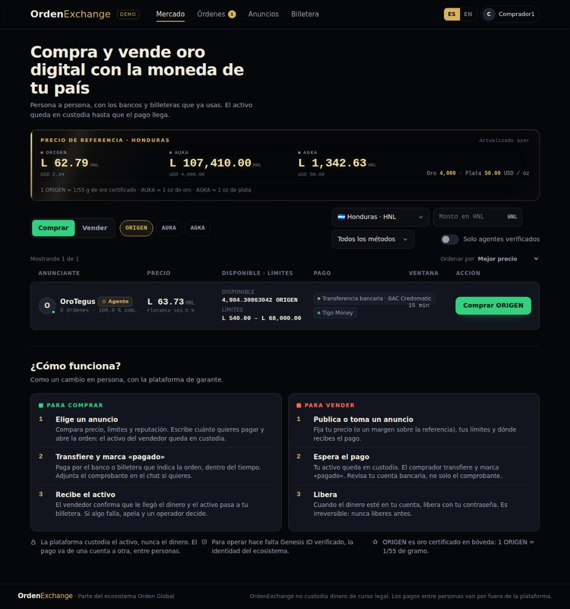
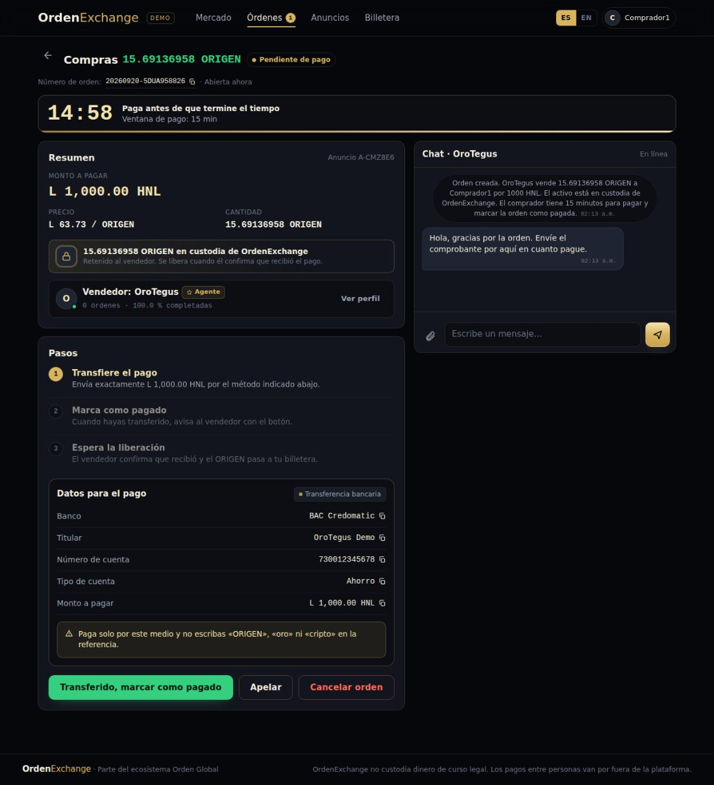
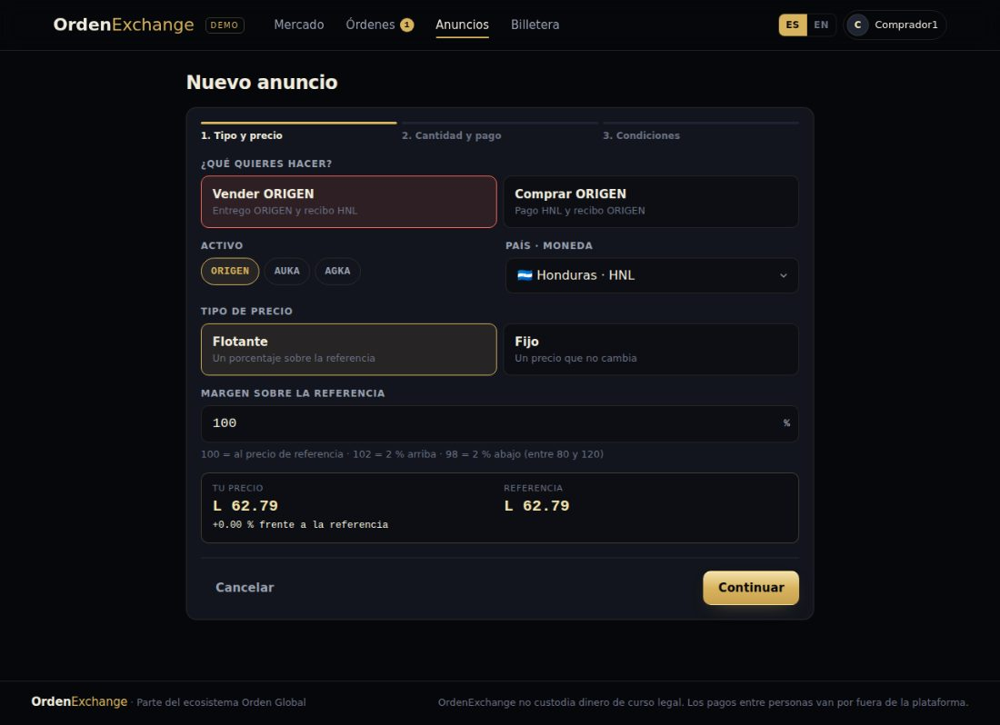
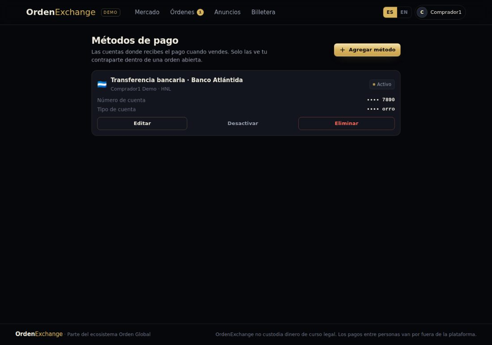
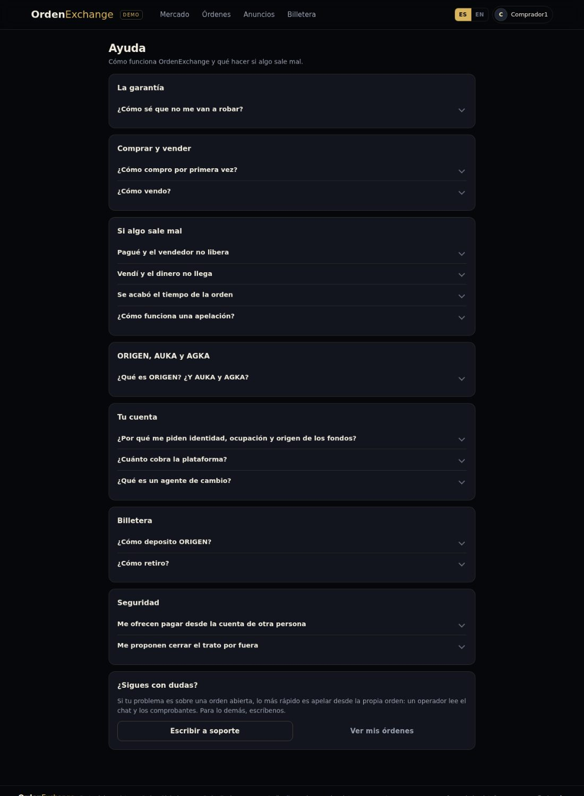
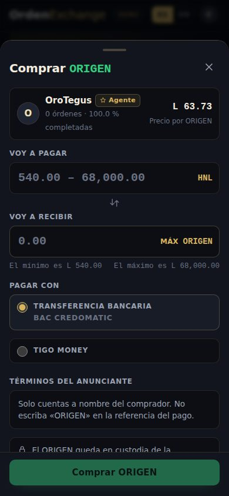
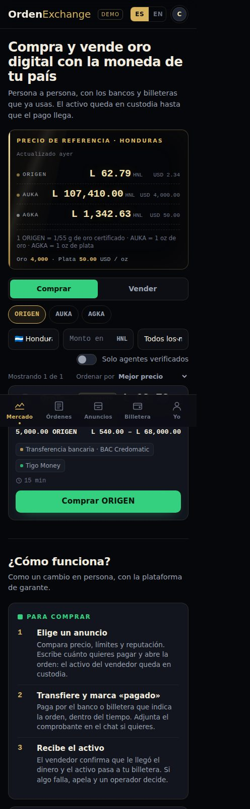
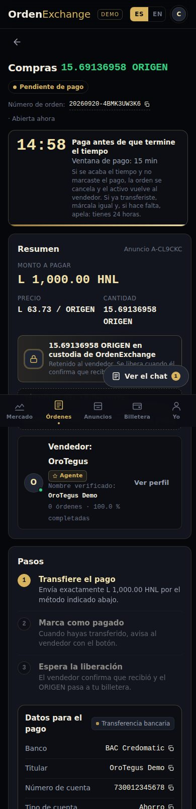
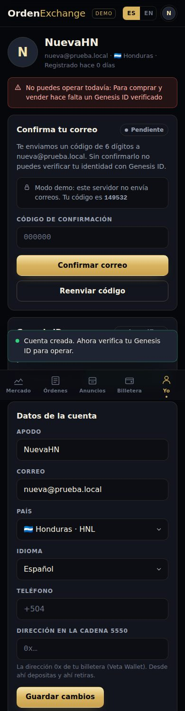
En /admin, con sesión propia de operador (no la de usuario). Tres roles, y cada acción del panel exige un permiso concreto:
| Permiso | admin | soporte | auditor | Qué permite |
|---|---|---|---|---|
leer | ✓ | ✓ | ✓ | Ver todo: resumen, órdenes, usuarios, retiros, depósitos, agentes, precios, configuración, bitácora |
ordenes.resolver · ordenes.cancelar · ordenes.chatear | ✓ | ✓ | — | Resolver apelaciones (liberar / devolver), cancelar órdenes, escribir en el chat de una apelación |
agentes.decidir · retiros.decidir | ✓ | ✓ | — | Aprobar, rechazar o suspender agentes; marcar retiros enviados (con hash) o rechazados |
usuarios.congelar | ✓ | ✓ | — | Bloquear una cuenta (cierra todas sus sesiones) y desbloquearla |
saldos.ajustar | ✓ | — | — | Ajuste manual de saldo con motivo (queda en bitácora) |
precios.editar · configuracion.editar | ✓ | — | — | Precio del metal y tasas; comisión, garantía, límites, tesorería |
operadores.gestionar | ✓ | — | — | Crear y desactivar operadores, cambiar roles |
ORDENEX_ADMIN_EMAIL; si no se fija ORDENEX_ADMIN_PASSWORD, se genera y se imprime una sola vez al arrancar. Bloqueo por correo + IP tras intentos fallidos; el token de sesión se guarda por hash.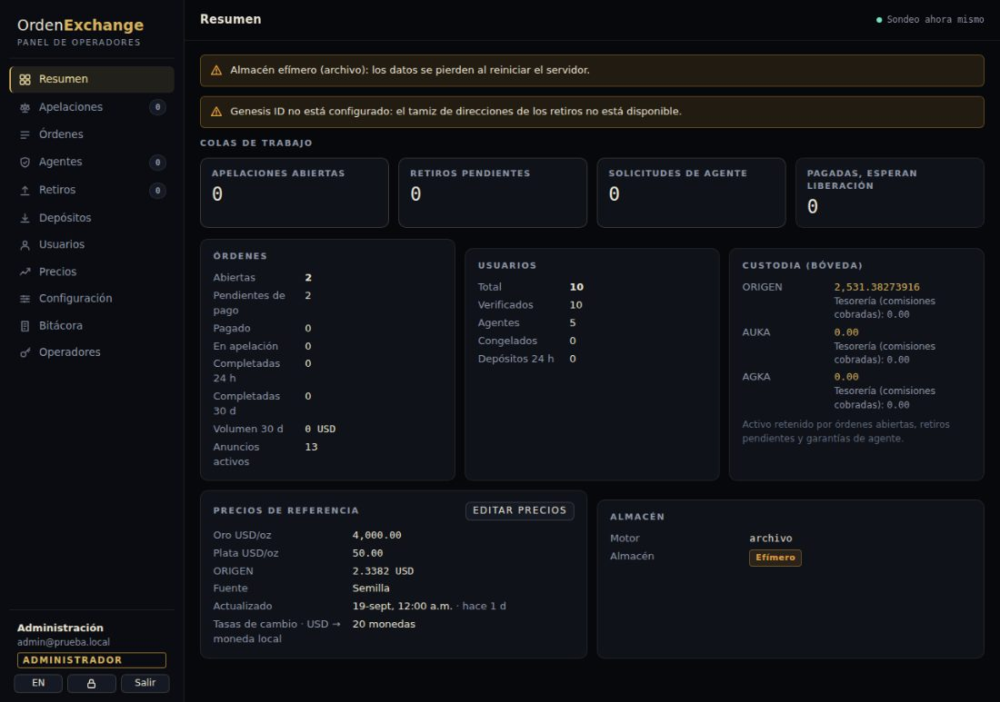
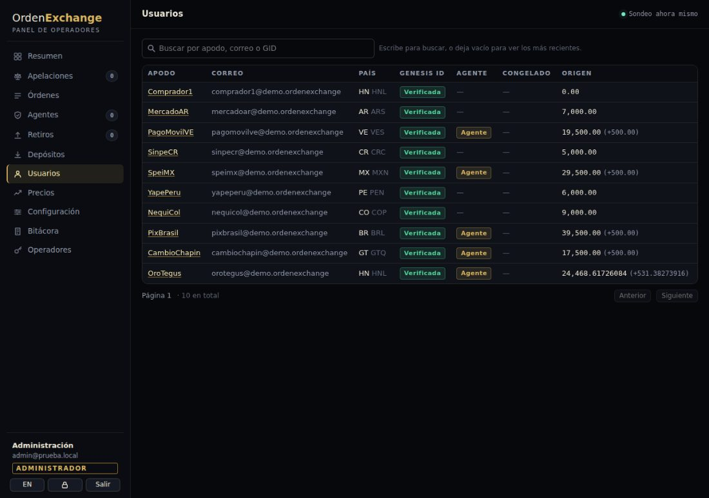
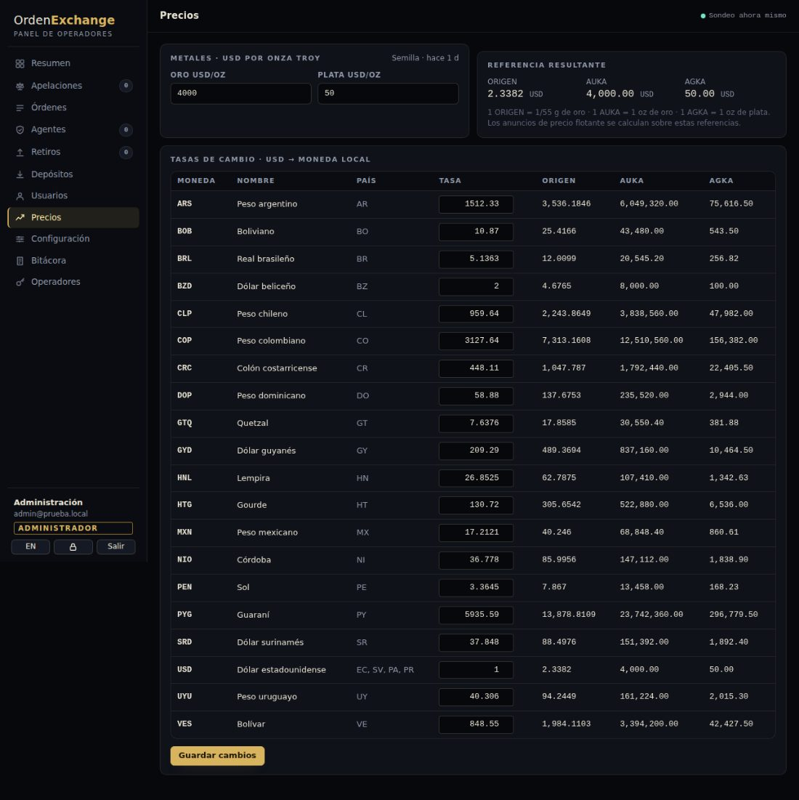
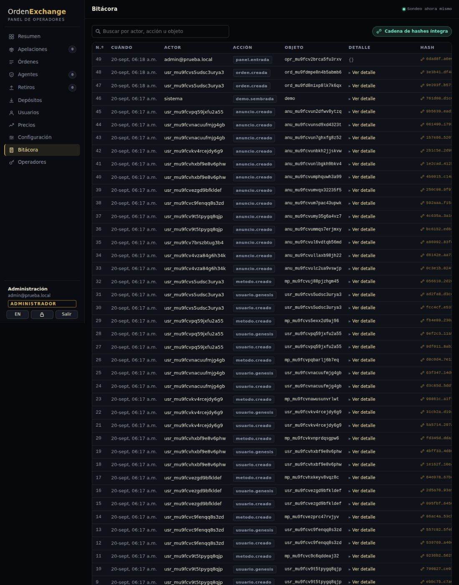
Lo que protege el dinero y los datos, tal como está en el código. Cada punto salió de una revisión adversarial sobre la aplicación y tiene su prueba.
| Riesgo | Cómo se cubre |
|---|---|
| Sesiones falsificadas | JWT firmado con ORDENEX_JWT_SECRETO, obligatorio en producción (sin él el servidor no arranca). El usuario se toma siempre de la sesión, nunca del cuerpo de la petición. |
| Sesiones que no se pueden cerrar | Cada usuario lleva sesionesDesde; cualquier token emitido antes deja de valer. Cerrar sesión, cambiar la contraseña o que un operador congele la cuenta mueven la marca. El instante de emisión va en milisegundos para poder revocar y emitir en el mismo segundo. |
| Adivinar contraseñas o correos | bcrypt; la comparación tarda lo mismo aunque la cuenta no exista (hash ficticio); ocho intentos fallidos bloquean 15 minutos; límites de peticiones por ruta e IP. |
| Quedarse con la identidad de otro | El correo se confirma con código antes de abrir el trámite en Genesis ID; un GID no se ata a dos cuentas; una cuenta verificada no se degrada por otra identidad. |
| Liberar lo ajeno · cancelar lo pagado · tomar el propio anuncio | Cada acción comprueba el papel de quien la pide y el estado de la orden; liberar exige la contraseña. Probado negativamente en flujo.test.ts. |
| Saldos inventados o negativos | Un solo punto de mutación, BigInt, rechazo entero, movimientos que suman el saldo (sección 6). Guardia contra la carrera de depósitos; hash de depósito y de retiro únicos. |
| Demostración encendida sobre dinero real | Una sola definición de producción; el grifo y la verificación falsa no existen en producción; las cuentas de demostración se congelan; el GID de demostración no vale. |
| Datos bancarios y comprobantes expuestos | Los métodos de pago se ven solo dentro de una orden abierta (enmascarados fuera); las imágenes del chat se sirven con URL firmada por HMAC y solo a las partes y al operador. |
| Inyección y scripts en el navegador | Content-Security-Policy estricta (sin scripts externos), HSTS, CORS solo a los orígenes configurados en producción, todo el HTML del frontend escapado. |
| Retiros a direcciones sancionadas | Tamizado en Genesis ID antes de aceptar el retiro, que se cierra si Genesis ID no responde. |
| Decisiones sin rastro | Bitácora encadenada con el operador, la acción y el detalle; el panel verifica la integridad. |
| Detrás de un proxy | trust proxy solo cuando se sabe que hay uno (Render, Vercel o ORDENEX_TRAS_PROXY=1), para que los límites por IP no se puedan burlar con una cabecera. |
El contrato completo, con cada campo y cada código de error, está en ordenexchange/API.md. Todo devuelve JSON; los errores llevan { error, codigo } y el frontend traduce el código. Sesión de usuario con Authorization: Bearer; sesión de operador aparte para /api/panel.
| Grupo | Rutas |
|---|---|
| Público | GET /api/mercado/bancos/:pais (los bancos del país al detalle) · GET /api/mercado/catalogo (países, monedas, métodos, activos, precios, configuración visible, demo) · GET /api/mercado/anuncios (filtros: lado, activo, pais, moneda, metodo, monto, soloAgentes, orden) · GET /api/mercado/anuncios/:id · GET /api/mercado/usuarios/:id · GET /healthz |
| Autenticación | POST /api/auth/registro · verificar-correo · reenviar-codigo · entrar · sso · salir · GET/PATCH /api/auth/yo · POST /api/auth/contrasena · demo: demo/usuarios, demo/entrar |
| Genesis ID | GET /api/genesis/estado · POST datos · documento · vivacidad · biometria · foto · vincular · sso/token · GET tamiz/:direccion · demo: demo/verificar |
| Billetera | GET /api/billetera · movimientos · POST depositos (hash) · GET depositos · POST retiros · GET retiros · POST retiros/:id/cancelar · demo: grifo |
| Métodos de pago | GET/POST /api/metodos-pago · PATCH/DELETE /:id |
| Mis anuncios | GET/POST /api/anuncios · GET/PATCH /:id · POST /:id/pausar · reanudar · cerrar |
| Órdenes | GET/POST /api/ordenes · GET /:id · POST /:id/pagado · liberar · cancelar · apelar · retirar-apelacion · calificar · GET/POST /:id/mensajes · GET /:id/imagenes/:img?f= |
| Agentes | GET /api/agentes/estado · POST solicitar · renunciar |
| Panel | POST /api/panel/sesion/entrar · GET resumen · apelaciones · ordenes · POST ordenes/:id/resolver · cancelar · mensaje · GET usuarios · usuarios/:id · POST usuarios/:id/congelar · ajuste · agente · GET agentes · retiros · POST retiros/:id/decidir · GET depositos · GET/PUT precios · configuracion · GET bitacora · GET/POST operadores · POST contrasena |
Tiempo real: la app sondea la orden abierta cada pocos segundos (GET /api/ordenes/:id/mensajes devuelve el detalle ligero con los mensajes nuevos). No hay WebSockets; con el volumen previsto no hacen falta.
Un solo proceso Node 22. En Render, el servicio ordenexchange está en el render.yaml de la raíz del monorepo (rootDir ordenexchange, npm install, npm start, comprobación en /healthz). En Vercel, vercel.json apunta a src/index.ts; ahí Mongo es obligatorio porque el disco es efímero. GET /healthz responde degradado mientras falte algo esencial y dice qué.
| Variable | Para qué | Obligatoria en producción |
|---|---|---|
ORDENEX_JWT_SECRETO | Firma de las sesiones de usuario | Sí (sin ella no arranca) |
ORDENEX_MONGO_URL · ORDENEX_MONGO_DB | Almacén persistente (sin ella, JSON en disco) | Sí para custodiar saldos reales |
ORDENEX_ADMIN_EMAIL · ORDENEX_ADMIN_PASSWORD | Primer administrador del panel | Recomendada (si no, se genera e imprime) |
GENESIS_URL · GENESIS_API_KEY | El puente con Genesis ID (clave de la app ordenexchange) | Sí: sin ella nadie se verifica ni opera |
BREVO_API_KEY · ORDENEX_CORREO_REMITENTE | Código de confirmación del correo | Sí: sin proveedor nadie confirma su correo en producción |
ORDENEX_TESORERIA · ORDENEX_RPC_URL · ORDENEX_CONFIRMACIONES · ORDENEX_EXPLORADOR | Cadena 5550: cuenta de la plataforma, nodo, confirmaciones, explorador | Sí para depósitos y retiros |
ORDENEX_ORO_USD_ONZA · ORDENEX_PLATA_USD_ONZA | Precio inicial del metal (luego desde el panel) | Sí |
ORDENEX_COMISION_PCT · ORDENEX_GARANTIA_AGENTE · ORDENEX_MAX_ORDENES_ABIERTAS · ORDENEX_MIN_ORDEN_USD · ORDENEX_MAX_ORDEN_USD_SIN_AGENTE · ORDENEX_AGENTE_ORDENES_MIN | Reglas de la plataforma (todas editables después desde el panel) | Opcionales (0 %, 500, 5, 5, 5 000, 0) |
ORDENEX_ORIGENES · ORDENEX_TRAS_PROXY | CORS y proxy inverso | Según despliegue |
ORDENEX_DEMO | Forzar la demostración (1/0). Nunca actúa en producción | No |
cd ordenexchange npm install npm start # http://localhost:4100 → app en /, panel en /admin npm run prueba # 47 pruebas en modo demostración npm run prueba:genesis # 28 pruebas contra el Genesis ID del repositorio npm run typecheck
Las pruebas son de extremo a extremo sobre el servidor de verdad (node:test, sin dobles): arrancan el servidor en un puerto libre, hacen peticiones HTTP y comprueban respuestas y estado. Además se recorrió la interfaz con Chromium (Playwright) en teléfono y escritorio para las capturas de este documento y para comprobar que cada pantalla y cada flujo funcionan en el navegador.
| Suite | Pruebas | Qué cubre |
|---|---|---|
decimal.test.ts | incluidas en las 47 | La aritmética exacta: conversión, comparación, suma, resta, multiplicación, división con recorte, validación de decimales. |
flujo.test.ts (demostración) | 48 en total | Catálogo y mercado; registro y confirmación del correo; verificación; orden de compra con custodia, chat, marcar pagado, liberar con contraseña, calificar; orden de venta sobre un anuncio de compra; cancelación y vencimiento; apelaciones resueltas en los dos sentidos; permisos de auditor; congelar cuentas (cierra sesiones); precios; anuncios propios con requisitos; retiros; agentes; y al final, que cada saldo cuadra con sus movimientos. También todo lo que NO se puede hacer: liberar lo ajeno, cancelar lo pagado, tomar el propio anuncio, operar sin GID, mover más de lo que hay en custodia. |
genesis.integracion.ts (Genesis ID real) | 28 | Sección 9: el trámite entero contra el Genesis ID del repositorio, sesión única, tamizado, monitoreo AML y suspensión. |
Genesis ID (genesis-id/) | 151 | Siguen pasando tras el arreglo del limitador. |
Total: 76 pruebas de OrdenExchange, todas en verde en la fecha de este documento, más las 151 de Genesis ID. npm run typecheck compila sin errores.
| Qué | Por qué | Dónde |
|---|---|---|
| MongoDB | El archivo JSON sirve para desarrollo; con saldos reales hace falta un almacén persistente y con respaldo. | ORDENEX_MONGO_URL; el código ya lo soporta. |
| Clave real de la app en Genesis ID | La app ordenexchange ya está registrada; hay que fijar su clave gid_live_… en el servidor. | GENESIS_API_KEY |
| Proveedor de correo | Sin Brevo nadie puede confirmar su correo y, por tanto, verificarse. | BREVO_API_KEY |
| Tesorería y firma de retiros | Cuenta de la plataforma en la cadena 5550 y quién firma; hoy los retiros se firman a mano y se anota el hash. | ORDENEX_TESORERIA; después, un firmante o multifirma. |
| Proveedor de biometría en Genesis ID | Sin él, cada rostro lo coteja una persona. Con Rekognition o un servicio externo el cotejo y la prueba de vida son automáticos. | GENESIS_AWS_ACCESS_KEY_ID o GENESIS_BIOMETRIA_URL en Genesis ID |
| Listas de sanciones en Genesis ID | Genesis ID no aprueba a nadie sin listas cargadas. | GENESIS_LISTAS_DIR o importación OFAC desde su panel |
| Precio del metal automático | Hoy lo fija un administrador. | Una fuente periódica con fuente: 'auto' |
/vivacidad ya existe y el puente reenvía reto y fotogramas).| Anuncio | Oferta pública de compra o venta con precio, límites y métodos de pago. Lo publica el anunciante; lo toma el tomador. |
| Orden | Una compraventa concreta sobre un anuncio, con su custodia, su chat y su temporizador. |
| Custodia (congelado) | El activo del vendedor retenido por la plataforma mientras dura la orden. «Congelar» y «descongelar» en la interfaz. |
| Liberar | El vendedor entrega el activo en custodia al comprador tras comprobar que cobró. |
| Apelación | Disputa sobre una orden pagada que resuelve un operador: liberar o devolver. |
| Agente de cambio | Comerciante verificado con garantía e insignia; puede operar montos mayores. |
| Genesis ID · GID | La identidad del ecosistema y su identificador (GEN-XXXX-XXXX-C). |
| MRZ | Zona de lectura mecánica: las líneas de caracteres al pie de un pasaporte o cédula (ICAO 9303). |
| KYC · AML · PEP | Conocer al cliente; prevención de lavado de activos; persona expuesta políticamente. |
| Tamizado | Comparar un nombre o una dirección contra listas de sanciones. |
| Tesorería | La cuenta de la plataforma en la cadena 5550: recibe los depósitos y desde ella salen los retiros y se cobran las comisiones. |
| Precio de referencia | El valor del activo en cada moneda derivado del metal (oro o plata) y de la tasa de cambio. |
| Flotante | Precio expresado como porcentaje sobre la referencia; se mueve con ella. |
| Bitácora | Registro encadenado por hashes de toda decisión y cambio relevante. |
ordenexchange/docs/diseno.html con Chromium. Las capturas provienen de recorridos reales con Playwright sobre el servidor en modo demostración y, para la identidad, sobre un Genesis ID real levantado desde el repositorio.